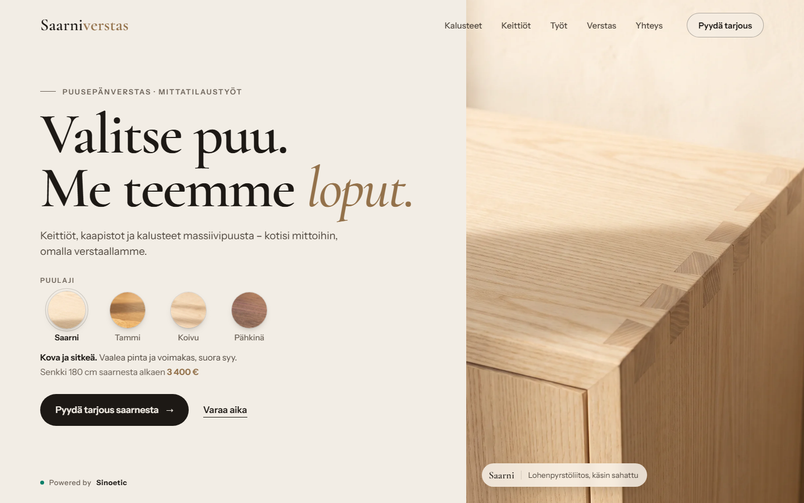
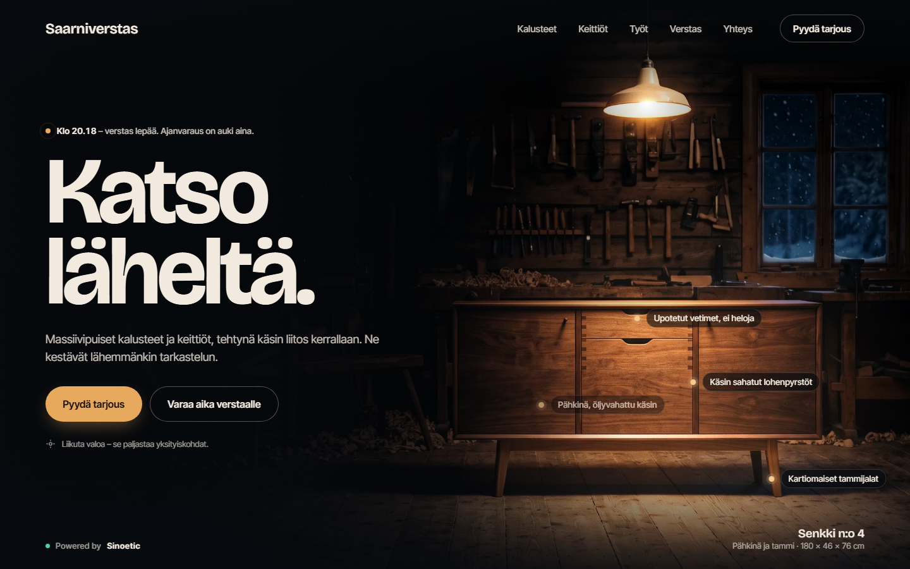

Vaihe 1a – ruuduilla näkyvä sisältö
Saarniverstaan etusivun kaksi suuntaa (ensimmäinen näkymä, 1440×900) ja Bookingin uusi ilme kahtena näkymänä. Avaa suunnat koko ruudulle: liike ja valinta toimivat oikeasti. Kuvakaappaukset: kaappaukset/, tallenteet: tallenteet/.
Läppärin verkkosivu

Suunta A – SyyVaalea, aikakauslehtimäinen. Valitse puulaji: kuva, sävyt, kuvateksti ja tarjousnappi vaihtuvat.

Suunta B – IltavaloTumma, elokuvallinen. Hiiri on työvalo, joka paljastaa senkin yksityiskohdat; verstaan tila kellonajan mukaan.
Booking, uusi ilme
Kumpikin näkymä toimii: asiakkaan näkymässä päivä, aika, osallistujat ja maksutapa vaihtuvat ja summa päivittyy.